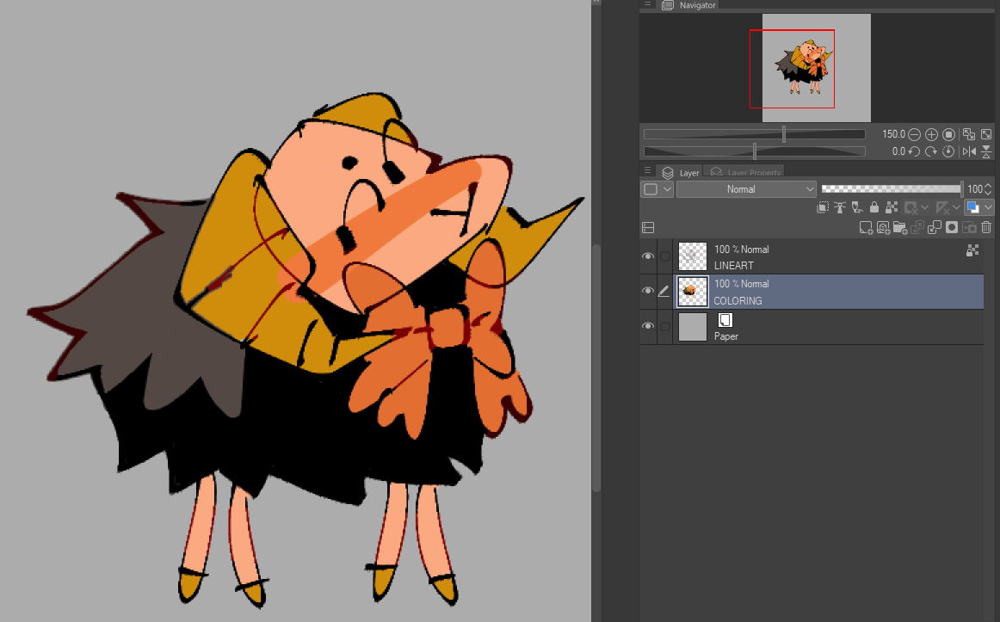
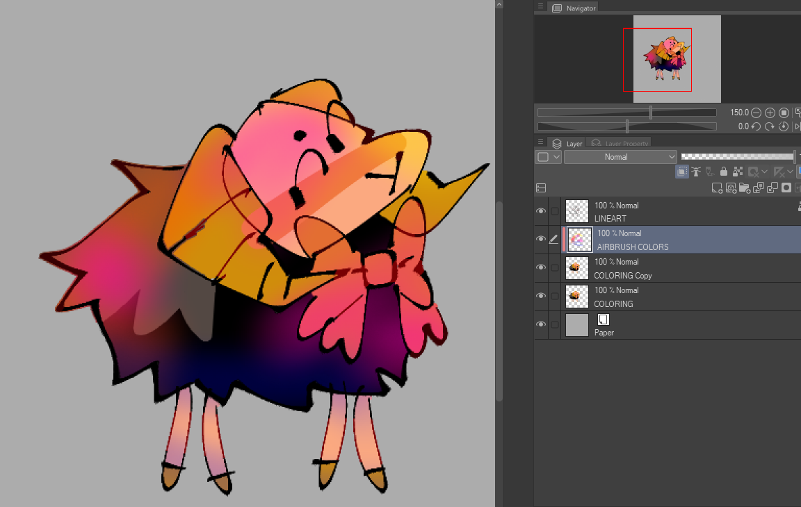
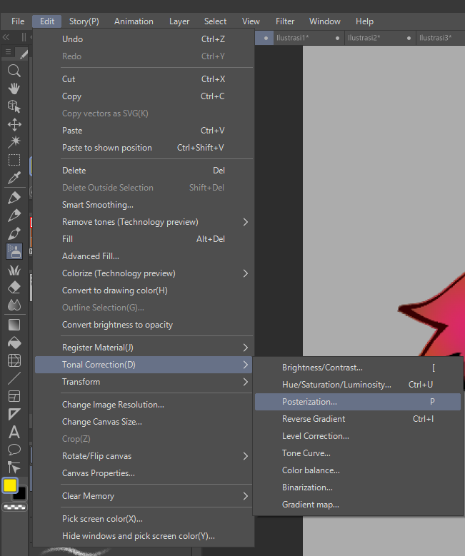
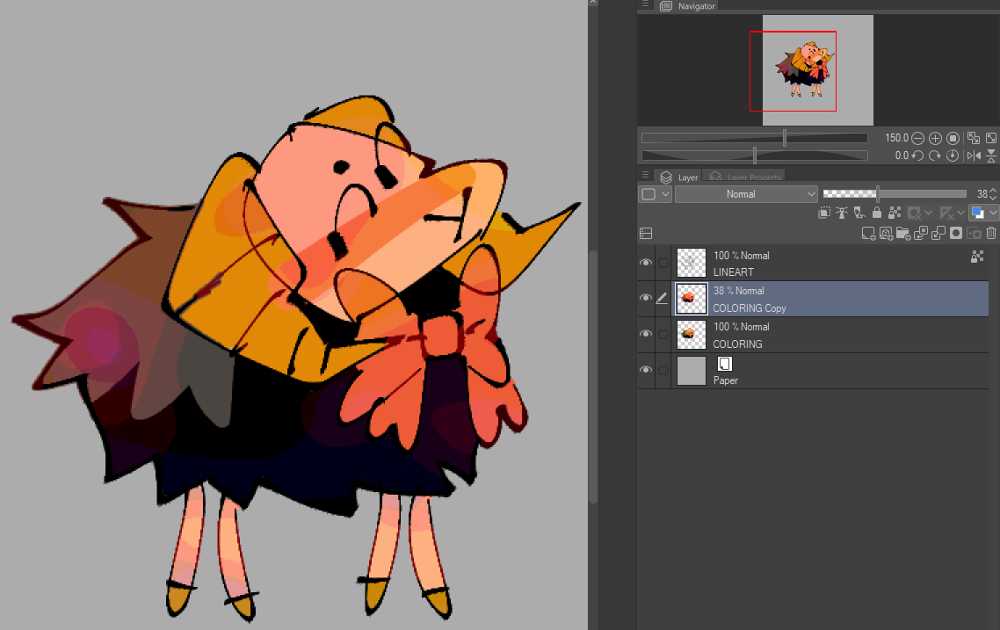
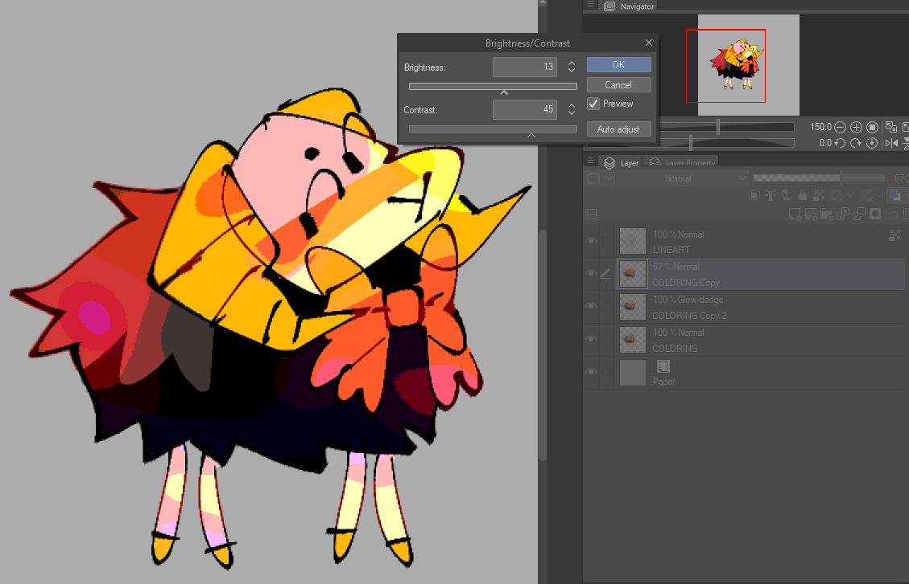
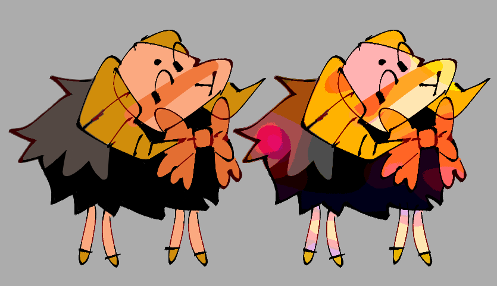

Today let's take a look at how I do color variation as a very impatient artist!
I know that many people do color variation by turning on 'hue variation'/'saturation variation'/'color scattering' or set some form of color randomness on their brush. The problem I have with this method (on CSP) is that I'm not able to pick how exactly the saturation/hue/etc changes because it's uncontrollable. I end up just constantly undoing and pressing my brush until I find the desired color randomness I like, which isn't efficient. Furthermore, it's a bit hard to compare and contrast colors during the coloring portion of drawing if you're already using modified colors (as in like, you're supposed do the editing AFTER your done with your drawing, not during it, so you can better check and see what you want to edit). Also, me personally? When I want color variation, I mean that I want actual color variation, not just a fuzzy texture.
This is a method I came up with that works for me, as an artist who use flat colors and bucket tool 99% of the time (but this method also works if you are the type of person who blends colors!). First of all, color something as you normally would.

However many coloring layers you have, combine them all into one new layer. Then, make a new clipping layer, and with the airbrush tool, spray random blotches of color.

Then combine the new coloring and airbrush layers altogether to one layer. Now here's what you're going to do. Go to Edit -> Tonal Correction -> Posterize ...

And now you can just play around with the levels until you find color variation that you like!
If this new posterized layer has too much of strong colors for you (that's what posterization does really), you can just lower the opacity until you find something you like. Personally I enjoy making posterized coloring layers of different levels and putting them all on different opacities to see what result I like the most.

You can also adjust the contrast and saturation in the same Tonal Correction menu until you settle on something you like! This is a way more fun and brainless way of doing color variation, and one of the greatest advantages is that you can actually steer what kind of color variation you want on each part of the drawing.


Here's some more very fast sloppy examples on some other drawings that I did.